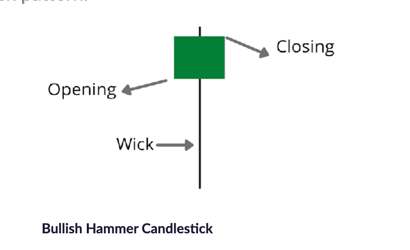
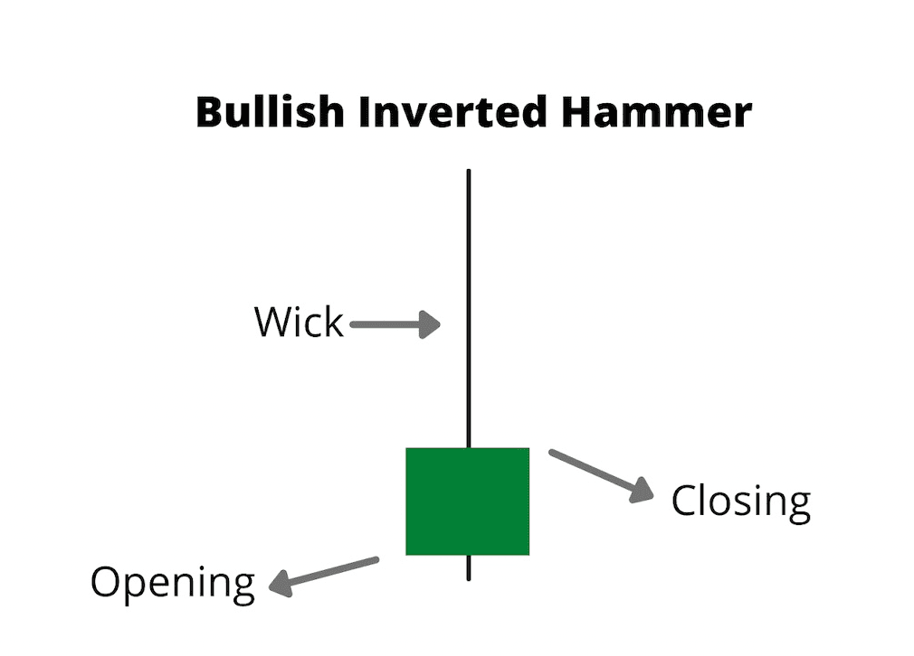
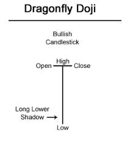
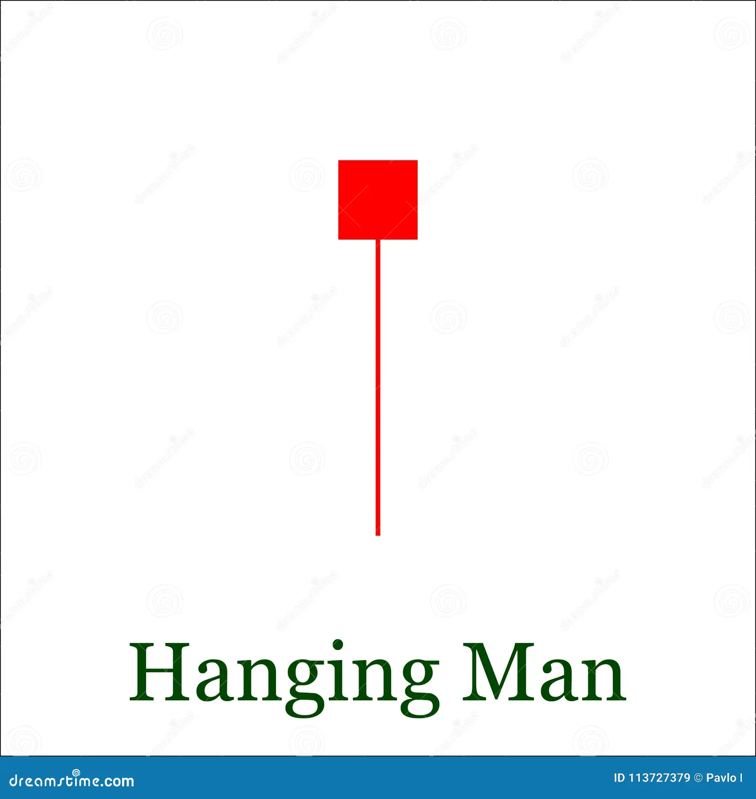
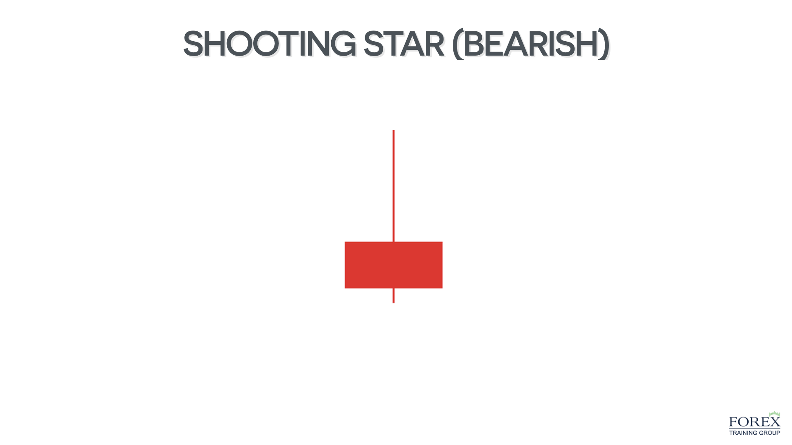
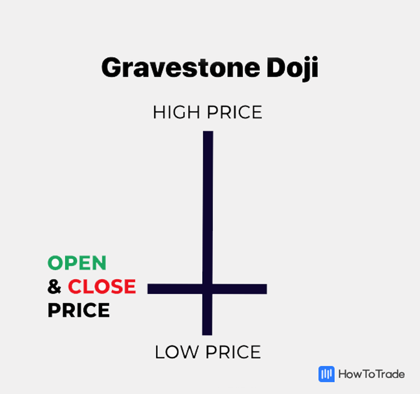

Hammer-
A hammer is a price pattern in candlestick charting that occurs
when a security trades significantly lower than its opening,
but rallies within the period to close near the opening price.
This pattern forms a hammer-shaped candlestick. This Candlestick pattern
is best when used with a support level. The price action shows that buyers
stepped in and took control.

Inverted Hammer-
The Inverted Hammer candlestick formation occurs mainly at the bottom of a
downtrends and can act as a warning of a potential bullish reversal pattern.

Dragonfly doji
A Dragonfly Doji is a type of single Japanese candlestick pattern
formed when the high, open, and close prices are the same.
It signals a potential reversal. The candle ends up with a tall lower wick and no body.
It is usually seen at the bottom of a downtrend.

Hanging Man
A Hanging man candlestick occurs during a uptrend and warns that
prices may start to reverse. The candle is composed of a small real
body, a long lower shadow, and little or no upper wick.

Shooting Star
A shooting star candlestick can be recognised as a small bodied candlestick
with a long wick on the top and little to no wick at the bottom. This pattern
happens at resistance levels to give traders clue a reversal may happen.

Gravestone Doji
A gravestone doji is formed when when the open,low,
and closing prices are all near each other with a long
upper wick.
